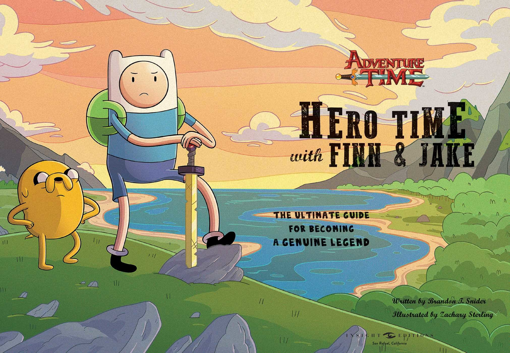
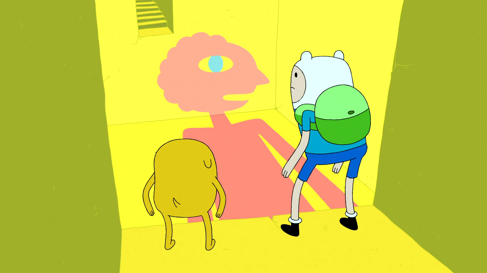

Arcs of Adventure Time
The Hero's Arc
This arc primarily follows Finn's journey from a young, adventurous boy to a more mature and introspective hero. It begins with his initial quests alongside Jake, where he battles monsters and saves princesses, and gradually evolves as Finn faces complex moral dilemmas and personal challenges. Key moments include his exploration of his identity, his relationships with characters like Princess Bubblegum and Marceline, and his growth as he learns about the responsibilities that come with heroism.
The Ice King’s Backstory
The Ice King arc delves into the tragic past of Simon Petrikov, revealing how he transformed from a kind-hearted human into the lonely Ice King due to the powers of his crown. Through flashbacks, viewers learn about his relationship with Marceline and the sacrifices he made, adding layers to his character. This arc explores themes of loss, memory, and the consequences of unchecked power, ultimately humanizing a character who often appears comical and villainous.

The Lich and the Apocalypse
The Lich serves as a formidable antagonist throughout the series, embodying pure evil and the threat of destruction. This arc builds up to his climactic confrontations with Finn and Jake, showcasing their bravery and resilience. The Lich’s attempts to bring about the apocalypse raise stakes, forcing the heroes to confront their fears and work together with allies from different kingdoms. Ultimately, this arc explores the themes of good versus evil and the fragility of existence.

The Multiverse and Cosmic Themes
Later seasons introduce concepts of the multiverse and cosmic forces, particularly in arcs involving the Elementals and the introduction of characters like the Time Lord and Prismo. These storylines expand the lore of Ooo and explore the nature of reality, choice, and the impact of individual actions across dimensions. Finn and Jake’s adventures take on a grander scale, as they grapple with the implications of their choices and the interconnectedness of all beings.
